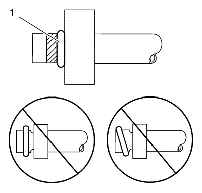

Sustitución de la junta tórica del aire acondicionado
Procedimiento de desmontaje
- Desmonte los componentes del refrigerante del A/C. Consulte el procedimiento de reparación correspondiente.
- Retire el sello de la junta tórica del componente de refrigerante de A/C.
- Revise si el sello de la junta tórica presenta daños para ayudar a determinar la causa raíz de la avería.
- Revise si los componentes del A/C en busca de daños o rebabas. Repárelo si es necesario.
Nota: Tape o cubra de inmediato los componentes del agente frigorífico de A/C para impedir la contaminación del sistema.
- Cierre con cinta, o una tapa, los componentes del refrigerante del A/C.
- Deseche el sello de junta tórica.
Procedimiento de montaje
- Inspeccione el nuevo sello de junta tórica en busca de signos de grietas, cortes o daños. Sustituya si es necesario.
- Retire la tapa o cubierta de los componentes de refrigerante de A/C.
- Con un paño limpio, seco y sin pelusas, limpie cuidadosamente las superficies de sellado de los componentes del refrigerante del A/C.
Nota: NO permita que el aceite refrigerante de viscosidad 525 y base mineral del nuevo sello de junta tórica acceda al sistema refrigerante.
- Aplique una fina capa de aceite refrigerante de viscosidad 525 y base mineral sobre la nueva junta tórica.
Nota: NO reutilice las juntas tóricas.
- Deslice con cuidado la nueva junta tórica sobre el componente del refrigerante del A/C.

- La junta tórica (1) debe estar totalmente asentada.
- Monte los componentes del A/C.
| © Copyright Chevrolet. Reservados todos los derechos |